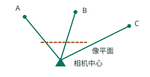
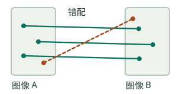
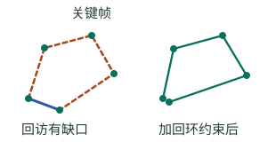
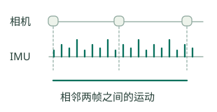
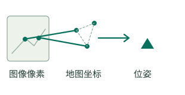
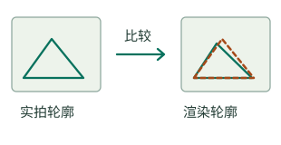
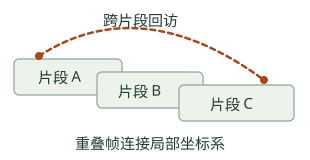

整段错开
两套坐标系的轴向与单位相同，原点却相差 30 cm，就会得到一条平行的轨迹。统一原点后偏差消失。若两套坐标系本来就各自定义原点，比较前应先约定对齐方式。
Sturm 等，TUM RGB-D Benchmark，IROS 2012在回放器中看整段错开相机只走了一次。如果定位系统从第一帧起就偏了 30 厘米，和它起初很准、走到终点才偏了 30 厘米，怎样区分？这个实验让你在同一段真实拍摄上比较这两种情况。
实线是测出来的。TUM 数据集用外部运动捕捉系统记录相机的三维位置。每张实拍照片按拍摄时间与最近的一次测量配对，得到这一帧的参考位置。
虚线是按规则造出来的。你选一种偏移方式，页面就在每帧参考位置的 X 坐标上加一个数，得到模拟定位结果。照片只供回看，这里没有模型从图像预测轨迹。
逐步漂移从 0 开始，按已过去的时间比例增加偏移。点「播放」，观察两个位置从哪里开始分开。
误差曲线上的每个点，都是同一帧的模拟位置到参考位置的三维直线距离。点曲线可回看那一帧。切换投影平面只改变看轨迹的角度，误差仍按三维坐标计算。
参考位置来自运动捕捉，RGB 照片按最近时间戳配对。估计轨迹由选定扰动沿世界 X 轴生成，朝向沿用参考值。切换误差模式时，同一时刻的真实照片保持一致。
对齐起点会从整条估计轨迹中减去首帧的位置偏差，只修正平移。当前位置误差是两个三维点的欧氏距离，均方根误差覆盖全部 64 帧。位移差比较相邻抽样帧的三维位移向量，间隔随时间戳变化。本实验只评估平移，未进行全轨迹刚体拟合。
Sturm 等，A Benchmark for the Evaluation of RGB-D SLAM Systems，IROS 2012。此处选取 freiburg1_xyz 的 64 帧，缩小并转为 JPEG，参考位姿与照片的匹配时间差均小于 5 毫秒。原始数据 · CC BY 3.0 · 复现方法
位姿包括三维位置和朝向。手机一路拍过走廊，只要把转身的角度估错一点，走得越远，估计位置就可能离真实路线越远。举例说，沿直线走 10 米，若估计方向始终偏 1°，终点的横向偏差约为 17 厘米（10 × sin 1°）。上面的回放器保留了实拍画面和参考位置，用沿 X 轴的可控偏移，把几种常见现象单独拿出来观察。
小图横轴为时间，纵轴为位置误差。曲线能帮助定位出问题的时段；要判断原因，还得回看原图、匹配点、传感器时间戳和跟踪状态。这里的曲线是教学示意，方法图也不代表论文跑分。
两套坐标系的轴向与单位相同，原点却相差 30 cm，就会得到一条平行的轨迹。统一原点后偏差消失。若两套坐标系本来就各自定义原点，比较前应先约定对齐方式。
Sturm 等，TUM RGB-D Benchmark，IROS 2012在回放器中看整段错开每次把相邻帧的运动接到上一帧，一点点方向或距离误差就可能积累。方向稍有偏差也会使末端横向偏得很远。这里用沿 X 轴的线性增长演示；真实漂移会转弯、波动，也可能被回环修正。
Mur-Artal 等，ORB-SLAM，2015在回放器中看越走越偏短时遮挡、运动模糊或跟上了移动的人，都可能削弱定位。重新看到熟悉地标后，系统可能恢复，也可能跳变或停止输出。图中的三角形是设定的恢复过程，峰值不指认某一帧真的跟丢了。
Mur-Artal 等，ORB-SLAM，2015 · Zheng 等，WildPose，CVPR 2026在回放器中看中间偏、后来恢复实验直接复制参考位置，距离自然处处为零。真实设备与参考测量都有噪声。这个模式用来核对读数，也提供一个理想起点。
Sturm 等，TUM RGB-D Benchmark，IROS 2012在回放器中看零误差对照带着三个问题读这条路线：有没有已知地图？能看到一张照片还是一段视频？除了图像，还能测到什么？ 已知地图中的定位要找回地图坐标；视觉里程计关心相邻时刻的运动；同步定位与建图（SLAM）还会维护地图并利用旧地标纠正历史轨迹。下面沿问题演进阅读，各条路线的年代有交叠。
18 世纪的测量问题至多视图几何
控制点在世界中的距离是已知的。移动候选相机，直到从相机看出去的三条射线同时指向 A、B、C。

1773 年 Lagrange 研究过三点测量问题，1841 年 Grunert 给出直接解法。现代 P3P 用三个已知三维点及其像素位置求相机位姿，额外对应点可筛选候选解。已知尺寸的 AprilTag 也能为室内相机提供坐标和尺度。
适用条件与取舍 地标坐标与镜头标定可靠时，单张图就能定位。三个点可能有多个解，标记太小、斜看或被遮挡都会削弱约束。
Ding 等，Revisiting the P3P Problem，CVPR 2023（含早期文献） · Olson，AprilTag，2011让相机从不同倾角拍同一块平面标定板，用平面到图像的单应关系求焦距、主点等参数，再拟合畸变。广角镜头、逐行曝光的相机还需要合适的投影或快门模型。
适用条件与取舍 能减少整批观测的系统误差。拍再多近乎相同的角度，也难弥补标定姿态缺少变化。
Zhang，A Flexible New Technique for Camera Calibration，2000 · ETH Zürich，Kalibr 标定工具与论文八点法和五点法利用同一静态点在两张图中的极线约束，恢复相对旋转与平移方向。拿着一台相机横移，近物比远物移动更多，这种视差帮助估计结构。
适用条件与取舍 不必预先布置地标。单目双视图本身无法给出米制尺度；原地纯转时，也没有平移视差可供三角化。
Longuet-Higgins，双视图重建，1981 · Nistér，五点相对位姿，2004从像素运动到可靠的对应关系
绿实线代表支持同一运动的匹配，橙虚线是错配。真实场景中的像素运动还取决于深度和旋转，图中只画了平移示意。

SIFT 为局部纹理生成描述子，便于跨视角寻找相同地标。Lucas–Kanade 光流从邻近位置出发，让同一小块纹理在连续帧中对齐。
适用条件与取舍 描述子便于拉开视距后重找地标，重复窗格易张冠李戴。光流适合追踪小运动，模糊、遮挡和大位移会使跟踪失效。
Lowe，SIFT，2004 · Lucas 与 Kanade，图像配准，1981反复用少量对应点提出候选位姿，再看其余匹配中有多少与该位姿的投影一致。用支持较多的匹配重新估计。
适用条件与取舍 少量坏对应不会直接拉偏所有结果。正确匹配太少时，采样成本会升高；若大量点来自同一个运动物体，最强共识也可能跟错对象。
Fischler 与 Bolles，RANSAC，1981 · Ding 等，Revisiting the P3P Problem，CVPR 2023（含早期文献）DSO 选择亮度梯度明显的像素，联合调整深度与位姿，让像素投影到下一帧后的亮度尽量一致。SVO 用局部图像块的对齐来跟踪，再用几何点维护地图。
适用条件与取舍 可利用不易形成稳定描述子的边缘，并获得亚像素对齐。曝光、反光和较差的初值会破坏亮度假设，几乎无纹理的墙也缺少约束。
Forster 等，SVO，2014 · Engel 等，Direct Sparse Odometry从逐帧运动到整张地图
每个点是一张关键帧。几何验证确认回到了旧地点后，新增一条跨时间约束，优化器可将修正分配到沿途各帧。

光束法平差（BA）同时微调相机和三维点，让地标在多张照片上的重投影更接近实际像素。COLMAP 代表逐张扩建地图的增量路线；GLOMAP 从整张图像关系图联合估计，减少顺序依赖。
适用条件与取舍 同一地标的多次观测会相互校正。大规模联合求解更耗算力，错误对应和薄弱的视角覆盖会影响结果。像素残差小也不能单独证明米制位姿准确。
Triggs 等，Bundle Adjustment — A Modern Synthesis · Schönberger 与 Frahm，COLMAP，2016 · Pan 等，GLOMAP，2024PTAM 把每帧跟踪与后台建图分开。ORB-SLAM 追踪地图点，在重新看见旧地点时验证几何关系，再优化关键帧之间的约束；跟丢后也可尝试用已有地图重新定位。
适用条件与取舍 关键帧让计算跟得上视频，可靠回访能修正长期漂移。单程路线可能没有回环；将两条相似走廊错认成同一条，反而会拉坏地图。
Klein 与 Murray，PTAM，2007 · Mur-Artal 等，ORB-SLAM，2015补上图像看不到的运动、尺度与绝对位置
图像之间，陀螺仪与加速度计已经给出多次运动读数。对齐时间并估计偏置，才能把两种观测用于同一段运动。

MSCKF 用惯性读数传播状态，再用多个视角看到的静态特征更新估计。粒子滤波可保留多个地点假设，适合初始位置不确定的地图定位。VINS-Mono 则在滑动窗口中联合优化视觉、惯性和偏置。
适用条件与取舍 滤波延迟低，但线性化误差会积累；粒子越多越耗算力，在高维状态中尤其昂贵。窗口优化可重新调整近期状态，但窗口大小限制了能一起修正的历史。
Mourikis 与 Roumeliotis，MSCKF，2007 · Dellaert 等，Monte Carlo Localization，1999 · Qin 等，VINS-Mono双目用已知基线恢复尺度；RGB-D 直接测深。KinectFusion 把当前深度点云与已融合的表面做迭代最近点配准（ICP），用许多表面点约束同一个相机。
适用条件与取舍 能把位移落实到米。远处双目视差小，深度噪声会被放大；若只看见一面平墙，沿墙滑动仍很难从点到平面距离中分辨。
Campos 等，ORB-SLAM3 · Newcombe 等，KinectFusion，2011相机短时模糊时，IMU 可补充快速运动；激光提供几何结构，GNSS 提供室外全球坐标。事件相机记录异步亮度变化，在高速或明暗反差大的场景能补充普通帧。
适用条件与取舍 额外传感器能使尺度或全局位置可观测，也增加硬件、标定和同步成本。惯性单独积分会漂，室内或高楼间的卫星观测可能缺失或有偏，静止画面产生的事件很少。
Qin 等，VINS-Mono · Shan 等，LVI-SAM，2021 · Cao 等，GVINS · Vidal 等，UltimateSLAM2015–2023 · 单张查询照片与已有地图
ACE 先估计像素对应的场景坐标，再用 PnP 和 RANSAC 把这些对应关系转换成同一个相机位姿。

分层定位先按整张图的外观检索少数候选地点，再通过局部匹配和几何验证精确定位。SuperGlue 结合特征点之间的上下文，估计哪些点可以互相匹配。
适用条件与取舍 检索缩小了大地图的搜索范围，几何验证可排除一部分外观近似的地点。若候选列表漏掉正确地点，后面的求解器也无从补救。
Sarlin 等，分层视觉定位，2019 · Sarlin 等，SuperGlue，2020PoseNet 用带位姿标签的图像训练卷积网络。对熟悉场景的一张新照片，网络一次前向计算即可给出位置与朝向。
适用条件与取舍 推理过程简洁，弱纹理图像也能利用整体外观。模型依赖训练场景和视角覆盖，换建筑或走到训练轨迹之外时，单个输出缺少可核验的匹配证据。
Kendall 等，PoseNet，2015ACE 把场景知识存进小型预测头。它给许多像素预测地图三维坐标，再用 RANSAC 和 PnP 检查哪些预测能支持同一个位姿。
适用条件与取舍 保留了几何验证和可检查的内点。建立新地图仍需要该场景带位姿的图像，重复纹理可能让许多像素指向错误位置。
Brachmann 等，ACE，20232021–2024 · 从单张定位回到连续视频
渲染式定位用候选位姿生成预期观测，将其与当前画面对齐。右边的两条轮廓示意残差；实际系统可比较颜色、深度等量。

DROID-SLAM 反复更新像素对应及其权重，通过可微的稠密 BA 同时修正相机位姿和逐像素深度。网络决定证据应怎样移动、该信多少，几何层让多个视角尽量一致。
适用条件与取舍 弱纹理和大运动时，可以利用比分散角点更丰富的上下文。迭代与稠密计算有显存开销；大量错误对应仍可能形成错误的轨迹。
Teed 与 Deng，DROID-SLAM，2021iMAP 用神经网络表示场景，SplaTAM 用可渲染的三维高斯表示场景。两者都让系统从候选位姿生成观测，将其与 RGB-D 输入比较，用残差改进跟踪和地图。
适用条件与取舍 同一张地图能支持跟踪与新视角渲染。优化地图和位姿需要计算，两者的误差又可能互相补偿。因此检验相机位置仍需要独立的轨迹参考。
Sucar 等，iMAP，2021 · Keetha 等，SplaTAM，CVPR 20242024–2026 · 泛化、长序列与动态场景
长序列可以拆成相互重叠的小段。重叠区域连接局部坐标，跨片段回环则提供远距离的约束。

DUSt3R 从图像对预测点图，让每个像素获得三维位置，再把多对结果对齐。VGGT 在多幅图像间交换信息，一次前向计算同时预测相机参数、深度和点轨迹等量。
适用条件与取舍 在相机参数未知时也能产生可用的三维初值。跨场景先验不能为每段视频提供实测尺度保证；视图多时，计算和显存也会成为限制。
Wang 等，DUSt3R，CVPR 2024 · Wang 等，VGGT，CVPR 2025MASt3R-SLAM 把两视图三维先验接入跟踪、回环与全局优化。VGGT-Long 将长视频分块，在重叠部分对齐，再加入跨段回环。
适用条件与取舍 保留了学习模型的对应能力，也能处理单次推理难以容纳的序列。若相邻片段重叠不足，或路线没有可靠回访，局部对齐误差仍可能向后传播。
Murai 等，MASt3R-SLAM，CVPR 2025 · Deng 等，VGGT-Long，2025 预印本相机静止、行人迎面走来时，人身上的像素也会移动。WildPose 从预训练三维特征估计运动区域，在可微 BA 中降低这些区域的权重，再用关键帧和回环约束相机。
适用条件与取舍 可以保留静止背景提供的证据，减少前景运动带来的假相机运动。画面几乎被运动物体占满时，可靠背景依然稀少，掩码误判也会丢掉有效观测。
Zheng 等，WildPose，CVPR 2026先看比较条件。 同一段视频上，单目、已知基线的双目、RGB-D 和带 IMU 的系统拥有不同的信息。还要确认是否给了地图、真实内参或首帧位姿，能否看到未来帧，以及用了多少显存和时间。
再看误差怎样对齐。 TUM 的绝对轨迹误差（ATE）比较对齐后同一时刻的位置，相对位姿误差（RPE）比较给定间隔内的相对运动，可分别看平移与旋转。常见做法是对米制轨迹拟合旋转和平移（SE(3)）；对尺度未知的单目结果，有些评测还拟合尺度（Sim(3)）。报告里应写明协议。这里的按钮只对齐首帧平移，“相邻帧位移差”只比较世界坐标中的位移向量。
最后查失踪的帧。 一台相机只在纹理丰富处给出位置，另一台走完全程。只比较成功帧的平均误差，前者可能看起来更好。还应核对成功跟踪比例、最长中断和重新定位耗时，并回看最大误差附近的画面。Sturm 等，TUM RGB-D Benchmark，IROS 2012